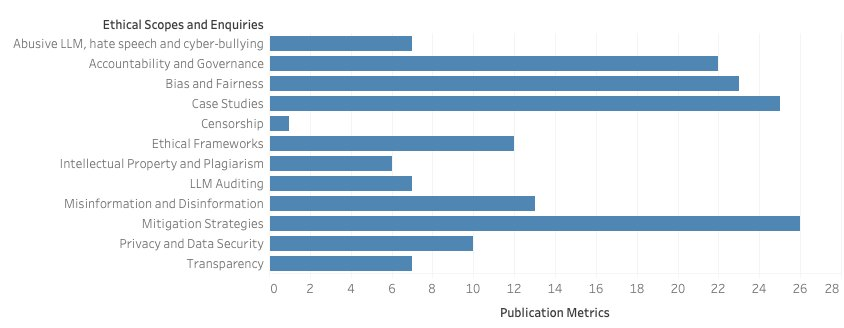
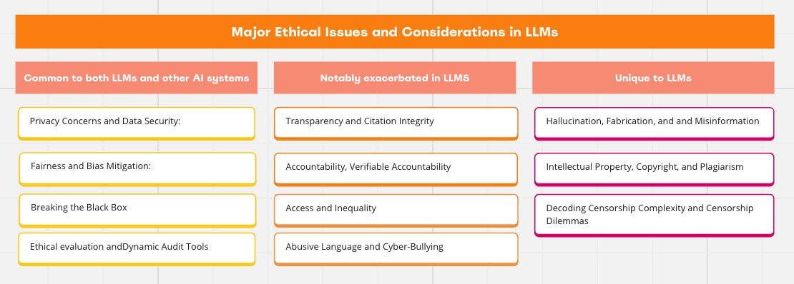
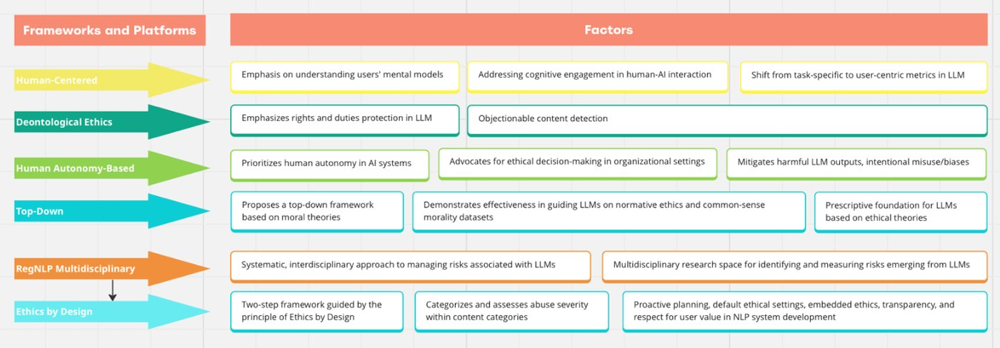
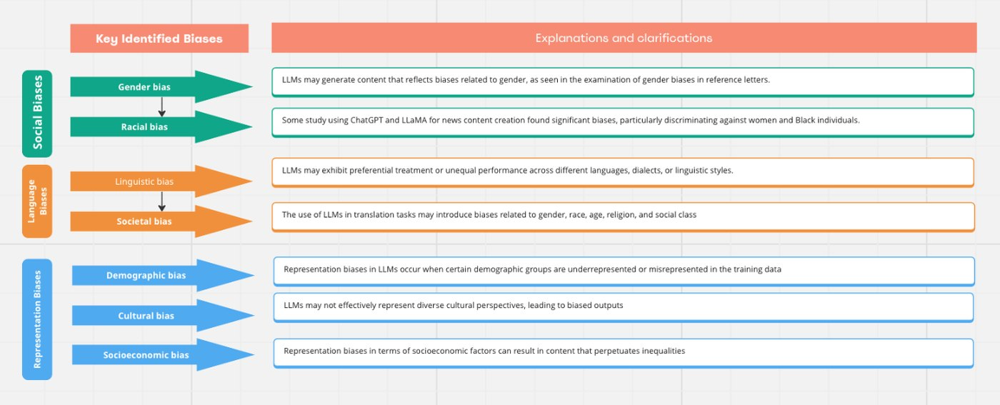
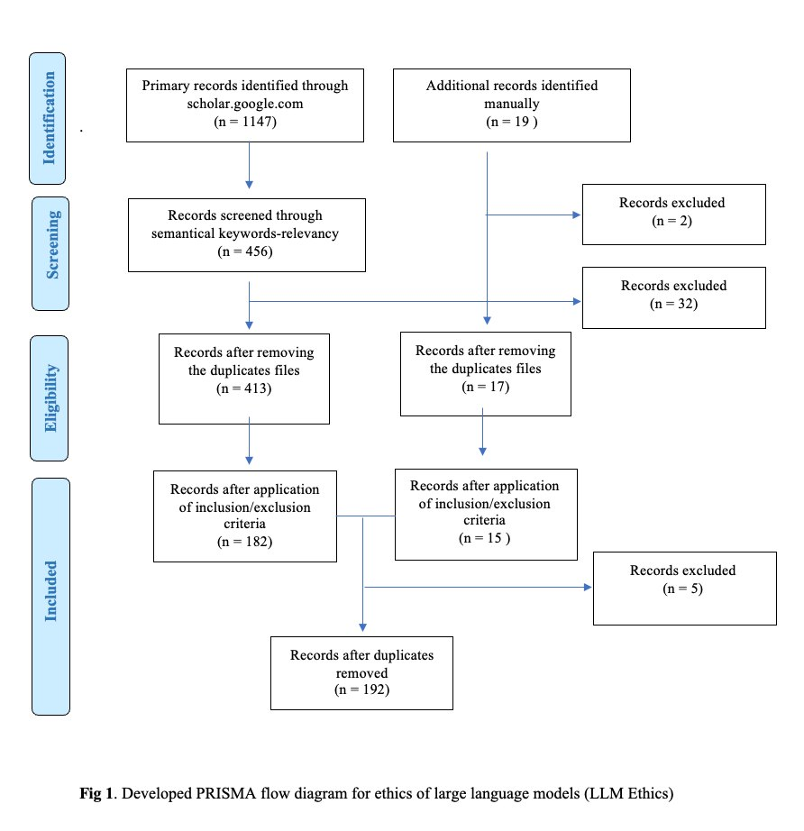

LLMs inherit the ethical problems of AI in general, such as privacy and fairness, and add new ones of their own. This PRISMA-based systematic review separates the two. It examines challenges common to LLMs and other AI systems, and challenges that arise uniquely from LLMs: hallucination, verifiable accountability, intellectual property and the complexity of decoding censorship. For each, it reviews mitigation strategies and argues for domain-specific ethical frameworks, dynamic auditing and interdisciplinary collaboration.
Highlights
Hallucination, IP and censorship dilemmas are distinct from traditional AI ethics and need their own tools.
Reviewed mitigations range from knowledge unlearning for privacy to watermarking for copyright.
One reviewed verification approach cut GPT-3.5 hallucinations from about 47.5% to 14.5%.
Static rules are not enough: the review calls for continuous audits that adapt to model updates and cultural context.
Framework

Fig. 2: how many reviewed studies address each ethical topic. Mitigation strategies, case studies, and bias and fairness dominate; censorship is barely studied.

Table 6: ethical concerns common to LLMs and other AI, those exacerbated in LLMs, and those unique to LLMs.

Table 3: ethical frameworks and platforms proposed for LLMs.

Table 4: major biases identified in LLMs: social, language and representation biases.

Fig. 1: PRISMA flow diagram for the review.
Common challenges
Shared with other AI
Privacy and data security
Fairness and bias
Breaking the black box
Ethical evaluation and dynamic audits
New challenges
Unique to LLMs
Hallucination, fabrication and misinformation
Intellectual property, copyright and plagiarism
Censorship complexity and dilemmas
Examples reviewed
Mitigations
Knowledge unlearning and differential privacy
Debiasing in data, loss functions and fine-tuning
Output verification against hallucination
Watermarking and citation mechanisms
Recommendations
Future directions
Domain-specific ethical frameworks
Dynamic, continuous audit systems
Interdisciplinary collaboration
Adaptive, transparent censorship policies
Summary of the review structure: challenges, mitigations and future directions.
How it works
PRISMA-guided literature search and screening on LLM ethics.
Quantitative analysis of which ethical topics LLM studies address.
Comparison of LLM-specific and general AI ethical challenges.
Review of technical, legal and governance mitigations for each challenge.